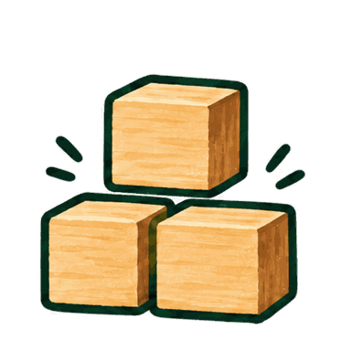

Eit ord, ei setning – kva for ein bås høyrer ordet til?

Ordbås
Rydd i orda med Vyrde

Vyrde gjer klar ordkorga …
Ordkorga kunne ikkje lastast. Prøv å laste sida på nytt.
ORDTUNET ER OPE
Kva skal vi sortere i dag?
Vyrde har ei korg full av ord. Les setninga og finn rett ordklasse. Du kan ta den tida du treng.
Tilpass øvinga
Ordskiftet bruker adjektiv og adverb i par. Alle steg er opne. Ordforklaring er lesestøtte og kostar ingen poeng.
Ei ny levering
Trykk på ein bås, eller dra kortet dit. Tastane 1–4 vel bås.
Ordet tyder:
GODT ARBEID I ORDTUNET
Leveringa er framme!